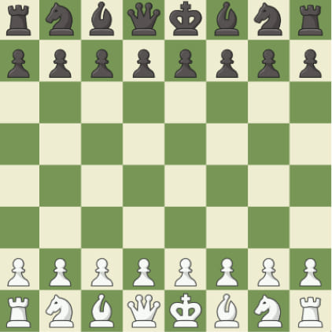

O xadrez é um dos jogos mais populares do mundo, sendo praticado por milhões de pessoas em torneios, clubes, escolas. As competições oficiais tiveram início no século XIX, sendo Wilhelm Steinitz, considerado o primeiro campeão mundial.
É um jogo que requer raciocínio lógico e estratégia, não envolve o elemento sorte, com exceção do sorteio das cores no início do jogo.
O surgimento do xadrez se deu no século VI, na Índia, com o nome de shaturanga, que significa “os quatro elementos de um exército”, em sânscrito. Posteriormente, o jogo foi para a China e para a Pérsia. É da palavra persa shah, que significa rei, que provêm o nome xadrez.
A forma atual do jogo surgiu no Sudoeste da Europa, na segunda metade do século XV, depois de ter evoluído de suas antigas origens persas e indianas.
O enxadrismo foi reconhecido como esporte pelo Comitê Olímpico Internacional em 2001.
Acredita-se que o xadrez tenha chegado ao Brasil no ano de 1500 pelos portugueses.
FonteO objetivo do jogo de xadrez é dar xeque-mate ao Rei adversário, ou seja, colocando-o sob ameaça de captura (xeque), sem que ele tenha como escapar desse xeque. Para isto, cada jogador dispõe de 16 peças, sendo:
Xeque-mate, ou simplesmente mate, é uma expressão usada no enxadrismo para designar o lance que põe fim à partida, quando o Rei atacado por uma ou mais peças adversárias não pode movimentar-se para outra casa.
No começo da partida o tabuleiro é colocado de forma que cada jogador tem a casa branca (ou de cor clara) no canto inferior direito.
As peças são dispostas da mesma forma sempre. A segunda linha horizontal (ou fileira) é preenchida com peões. As torres ficam nos cantos, seguidas dos cavalos, bispos e finalmente a dama, que sempre fica na casa de sua cor (dama branca na casa branca, dama preta na casa preta). O rei fica na casa remanescente.
Cada um dos 6 diferentes tipos de peças se move de forma diferente. As peças não podem mover-se através de outras peças (embora o cavalo possa saltar sobre outras peças) e nunca podem avançar para uma casa que tenha uma das suas próprias peças. No entanto, elas podem ser movidas para tomar o lugar de uma peça do oponente que é então capturada. As peças são geralmente movidas para: posições onde podem capturar outras peças (movendo até suas casas e depois as removendo defender suas próprias peças em caso de captura ou controlar casas importantes na partida.
Clique na peça para ver o que ela faz